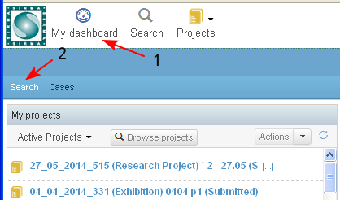
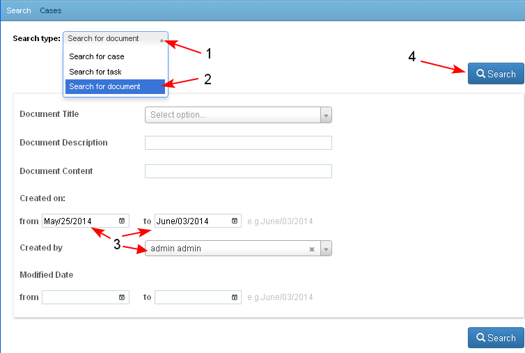
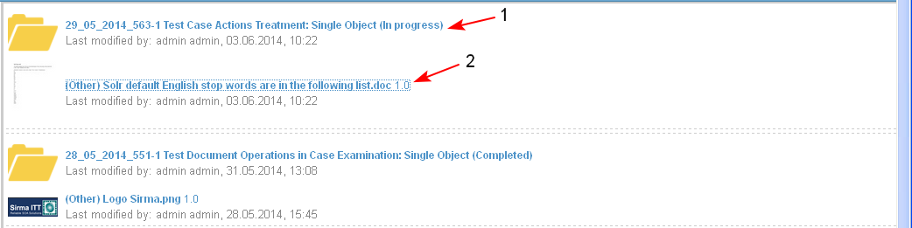
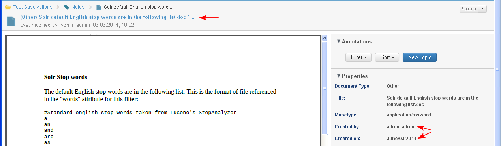

The Search operation allows the user to search among all documents to which he/ she has access.
- The user starts the search operation from an opened Personal Dashboard/ tab "Search" (1-2)

- In the opened screen the user:
- Selects the "Search Type" (1-2).
- Enters search criteria (3). The following are available:
- Document Title - text field where the user may input and search by a part of word, whole word or phrase which are contained in the document title
- Document Description - text field where the user may input and search by a part of word, whole word or phrase which are contained in the description of the document
- Document Content - text field where the user may input and search by a part of word, whole word or phrase which are contained in the content of the document
- Created on - from date/ to data
- Created by - search by the name of the user who has created the document
- Modified date - search by last date of modification - from date/ to data
- The user clicks the button "Search" (4)
- Selects the "Search Type" (1-2).

- The system displays the search results in a table view which contains the following columns:
- Case Unique Identifier, Case Type, Case State, Last modified by, Modified on for the case where the document is attached (1).
- Under the case is displayed: Document Type, Document Name, Document Version, Last modified by, Modified on of the document which is found after the search (2).
The Case Unique Identifier, Case Type, Case State and Document Type, Document Name, Document Version are direct links and when selected open the corresponding case/ document.

- When the document is opened its properties correspond to the selected search criteria.
